des Québécois auront 65 ans et plus d'ici 2031
Institut de la statistique du Québec, 2025
Les aînés veulent rester chez eux. Leurs proches veulent les savoir en sécurité. Ce projet explore comment le design peut soutenir ce lien, sans alourdir le quotidien de personne.
La population québécoise vieillit et avec ce vieillissement vient une réalité que le système peine à absorber.
des Québécois auront 65 ans et plus d'ici 2031
Institut de la statistique du Québec, 2025
des Québécois de 75 ans et plus souhaitent demeurer à domicile
SHAW 2022
Demande en hausse, places en baisse, coûts en hausse dans les résidences pour aînés
Demande en hausse, places en baisse, coûts en hausse dans les résidences pour aînés
Problème humain
Le maintien à domicile se complexifie avec le temps, notamment en raison de la perte d'autonomie et des défis liés à la santé et à la sécurité.
Les proches aidants deviennent alors essentiels pour assurer ce soutien, souvent au prix d'une charge mentale importante.
Notre réponse
Concevoir une solution qui renforce le lien entre aînés et proches aidants, sans alourdir le quotidien de personne et sans sacrifier l'autonomie de l'un au profit de la tranquillité de l'autre.
Entretiens semi-dirigés
Donner la parole aux aînés et à leurs proches aidants pour explorer leurs besoins quotidiens et révéler des aspects difficilement perceptibles à travers l'observation seule
Observation non participante
Observer le quotidien des aînés et de leurs proches aidants afin d'identifier leurs routines, leurs interactions et les contraintes souvent invisibles
Observation participante
S'immerger dans leur réalité pour mieux comprendre leur relation, leurs dynamiques et la fréquence de leurs interactions
Photographie participative
Explorer le quotidien des aînés à travers leur propre regard pour révéler des réalités difficiles à exprimer autrement
Questionnaire
Valider et quantifier les tendances observées afin de mieux cerner les besoins et les difficultés vécues.
Afin de faire ressortir des constats de recherche enrichissants, plusieurs méthodes d'analyse ont été utilisées, notamment des diagrammes d'affinité réalisés à la fois sur FigJam et de manière manuelle, permettant ainsi d'aborder les données sous différentes perspectives.
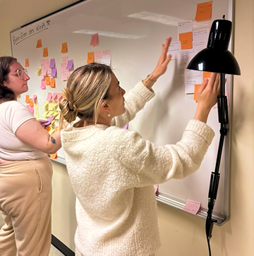
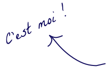
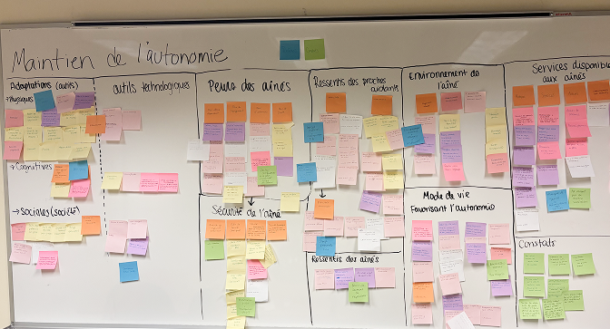
Écosystème réalisé pour schématiser nos constats et comprendre la relation entre les différents acteurs, ainsi que leurs rôles, leurs besoins et leurs ressentis.
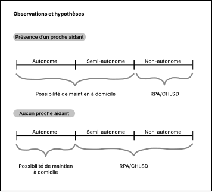

Le soutien aux aînés repose fortement sur les proches aidants, impliquant une charge physique et émotionnelle élevée.
Malgré la perte d'autonomie, le maintien à domicile demeure une préférence largement majoritaire chez les aînés.
L'offre actuelle de solutions technologiques répond peu aux enjeux de coordination entre aînés et proches aidants, tout en tenant compte de leurs capacités numériques.
Une méfiance envers la technologie persiste, avec une préférence marquée pour des solutions intuitives et peu intrusives.
La réticence des aînés à solliciter de l'aide complexifie la communication et limite l'expression de leurs besoins réels.
Favoriser le maintien à domicile des aînés en soutenant leur autonomie et leur sécurité au quotidien.
Réduire la charge mentale des proches aidants en facilitant le suivi de leurs proches.
Faciliter la communication entre les aînés et leurs proches afin d'améliorer la coordination du quotidien.
Ils ont servi de fil conducteur nous ont permis d'évaluer nos idées et de nous assurer que la solution répondait aux besoins réels des aînés et de leurs proches aidants.
| Adaptée à la réalité des aînés | Préserve l'autonomie et la dignité | S'intègre naturellement au quotidien | Utile et bénéfique pour les deux parties | |
|---|---|---|---|---|
|
Bracelet ou collier connecté Communiquer facilement avec ses proches grâce à un objet porté en permanence |
||||
|
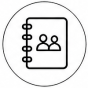 Journal interactif Inviter naturellement l'aîné à partager de petits moments de sa journée sans avoir à utiliser un téléphone. |
||||
|
Application : Répartition intelligente des tâches L'IA attribue les responsabilités aux proches aidants selon leur disponibilité, leur proximité et leurs habitudes. |
Légende
BODI est un écosystème d'appareils connectés par un pod, une application mobile et un babillard numérique qui est conçu pour amener une communication bidirectionnelle en temps réel entre l'aîné et son proche aidant. En centralisant les échanges et l'organisation du quotidien, il soutient à la fois l'autonomie de l'aîné et la coordination du proche aidant.

Babillard numérique qui affiche de façon simple et visuelle les informations essentielles de la journée de l'aîné, afin de faciliter son organisation, soutenir son autonomie et maintenir le lien avec ses proches.
Assistant vocal simple et accessible, le pod permet à l'aîné de communiquer ses besoins, recevoir ses rappels et rester connecté sans effort, tout en réduisant les barrières technologiques.
BODI App
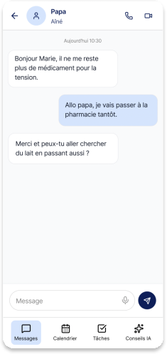
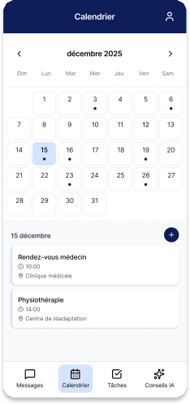
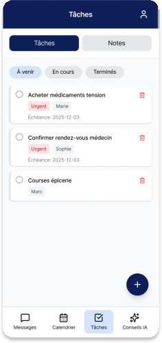
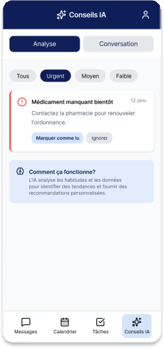
Les messages de l'aîné sont transmis par écrit depuis une commande vocale donnée au BODI pod.
Le proche aidant peut répondre ou appeler l'aîné en FaceTime via son téléphone.
Planification des journées avec événements et rappels à distance.
Les informations du jour sont affichées au babillard et transmises par le pod.
Création de rappels et listes pour organiser le quotidien à l'avance et éviter les oublis.
Recommandations personnalisées basées sur les échanges avec l'aîné.
Possibilité de poser des questions à l'IA.
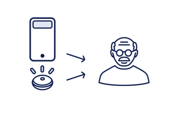
01 L'aîné informe le BODI Pod qu'il a besoin de renouveler sa médication rapidement.
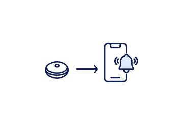
02 Le BODI Pod enregistre le besoin et envoie une notification à l'application du proche aidant.
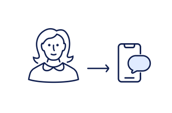
03 Le proche aidant reçoit la demande et confirme par message qu'il s'en occupera dans la journée.
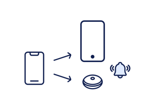
04 Le message du proche aidant est transmis au BODI APP et au BODI Wall dans la maison de l'aîné.
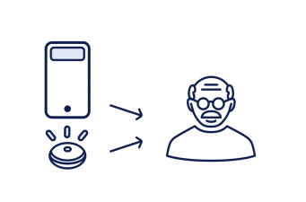
05 Le BODI Pod et le BODI Wall transmettent le message à l'aîné, oralement et visuellement.
Autonomie ↑
Accès simple aux informations importantes et aux rappels du quotidien
Sentiment de sécurité ↑
Échanges faciles et des proches plus facilement joignables sans avoir besoin d'appeler
Sérénité ↑
Se sentir soutenus lorsqu'ils en ont besoin tout en conservant leur indépendance
Charge mentale ↓
Suivi centralisé, rappels partagés et recommandations intelligentes
Communication ↑
Échanges bidirectionnels en temps réel, par message ou commande vocale
Organisation ↑
Calendrier partagé, gestion des tâches et espace familial multi-profils
Tranquillité d'esprit ↑
Vision d'ensemble sur le quotidien de l'aîné, sans vérifications constantes
Recherche documentaire — Elicit
Aide à la recherche documentaire sur la problématique
Entrevues semi-dirigées — NotebookLM
Transcription des enregistrements et extractions de constats pertinents
Analyse — FigJam AI
Aide dans le regroupement des données ethnographiques
Prototypage — Gemini, Figma make et Figma Design
Aide à la conception et la création de mockups et d'interfaces utiles à la représentation des solutions

Assistant intelligent de Naître et Grandir visant à centraliser l'information périnatale et à accompagner les parents à chaque étape de la parentalité

Améliorer l'intégration et la visibilité de l'offre immobilière de Desjardins au sein de son écosystème financier numérique.